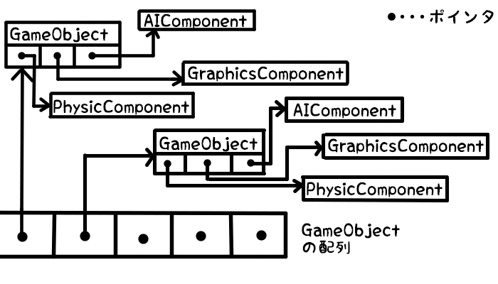
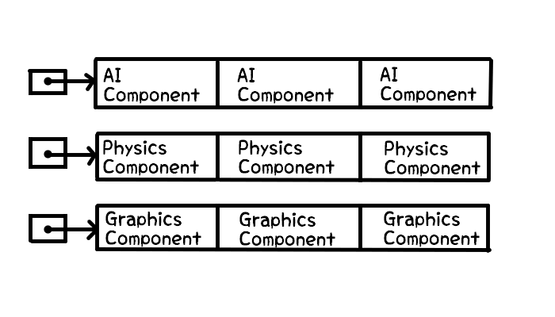

では、実際のコードを交えてDataLocalityについて見ていきましょう。
以下のようなGameObjectクラスがあります。
GameObjectは各Componentクラスの関数を呼び出すことで、更新処理や描画処理を実行します。
- class GameObject
- {
- public:
- //更新処理。
- void Update()
- {
- m_ai->Update();
- }
- //物理処理。
- void UpdatePhysics()
- {
- m_physics->Update();
- }
- //描画処理。
- void Render()
- {
- m_render->Update();
- }
- private:
- AIComponent* m_ai = nullptr; //AIの処理を行うクラス。
- PhysicsComponent* m_physics = nullptr; //物理シミュレーション処理を行うクラス。
- GrahicsComponent* m_render = nullptr; //描画処理を行うクラス。
- };
ゲームループでは、以下のようにGameObjectの処理を呼び出しています。
- //ゲームループ。
- while (true)
- {
- //各ゲームオブジェクトの更新処理。
- for (int i = 0; i < gameObjectNumber; i++)
- {
- gameObjectList[i]->Update();
- }
- //各ゲームオブジェクトの物理処理。
- for (int i = 0; i < gameObjectNumber; i++)
- {
- gameObjectList[i]->UpdatePhysics();
- }
- //各ゲームオブジェクトの描画処理。
- for (int i = 0; i < gameObjectNumber; i++)
- {
- gameObjectList[i]->Render();
- }
- }
この時、それぞれのクラスのインスタンスは下記のようにメモリに保持されています。

各インスタンスへのアクセスでポインタを介しているので、キャッシュミスが発生してしまいます。
また、それぞれのインスタンスが連続でメモリに保存されているという保障はありません。
そこで、ポインタを使用しないようにし、各インスタンスを確実に連続でメモリに保存させるようにします。
- //各ポインタは、各配列の先頭の要素を指している。
- AIComponent* m_aiComponents = new AIComponent[MAX_ENTITIES];
- PhysicsComponent* m_physicsComponents = new PhysicsComponent[MAX_ENTITIES];
- GraphicsComponent* m_graphicsComponents = new GraphicsComponent[MAX_ENTITIES];
そして、この配列を使用して、各Componentの関数を呼び出すようにします。
- //ゲームループ。
- while (true)
- {
- //各Componentの処理を呼び出す。
- for (int i = 0; i < numEntities; i++)
- {
- m_aiComponents[i].Update();
- }
- for (int i = 0; i < numEntities; i++)
- {
- m_physicsComponents[i].Update();
- }
- for (int i = 0; i < numEntities; i++)
- {
- m_graphicsComponents[i].Render();
- }
- }
これで、ポインタの「追っかけ」は無くなりました。
また、各配列のデータは連続してメモリに保存されています。
キャッシュレスを減らすことが出来ました！
